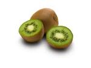

Macedonia de frutas
Ingredientes
- 2 platanos
- 200g de fresas
- 2 kiwis

- Zumo de 1 naranja
Pasos:
- Lava bien las fresas y pélalas con los plátanos y los kiwis
- Corta las frutas en trozos pequeños y ponlos en un bol
- Exprime la narnja y echa el zumo en la fruta cortada
- Mezcla con cuidado y dejalo enfriar 15 minutos en la nevera
- Macedonia lista